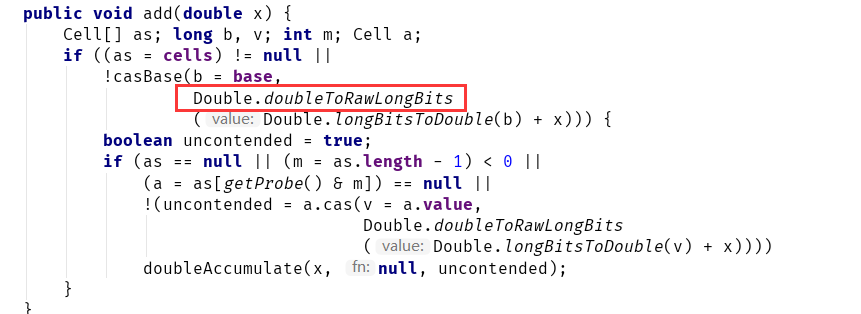

Java多线程进阶（十七）—— J.U.C之atomic框架：LongAdder
一、LongAdder简介
JDK1.8时，java.util.concurrent.atomic包中提供了一个新的原子类：LongAdder。
根据Oracle官方文档的介绍，LongAdder在高并发的场景下会比它的前辈————AtomicLong 具有更好的性能，代价是消耗更多的内存空间：
那么，问题来了：
为什么要引入
LongAdder？AtomicLong在高并发的场景下有什么问题吗？ 如果低并发环境下，LongAdder和AtomicLong性能差不多，那LongAdder是否就可以替代AtomicLong了？
1.1 为什么要引入LongAdder？
我们知道，AtomicLong是利用了底层的CAS操作来提供并发性的，比如addAndGet方法：

上述方法调用了Unsafe类的getAndAddLong方法，该方法是个native方法，它的逻辑是采用自旋的方式不断更新目标值，直到更新成功。
在并发量较低的环境下，线程冲突的概率比较小，自旋的次数不会很多。但是，高并发环境下，N个线程同时进行自旋操作，会出现大量失败并不断自旋的情况，此时AtomicLong的自旋会成为瓶颈。
这就是LongAdder引入的初衷——解决高并发环境下AtomicLong的自旋瓶颈问题。
1.2 LongAdder快在哪里？
既然说到LongAdder可以显著提升高并发环境下的性能，那么它是如何做到的？这里先简单的说下LongAdder的思路，第二部分会详述LongAdder的原理。
我们知道，AtomicLong中有个内部变量value保存着实际的long值，所有的操作都是针对该变量进行。也就是说，高并发环境下，value变量其实是一个热点，也就是N个线程竞争一个热点。
LongAdder的基本思路就是分散热点，将value值分散到一个数组中，不同线程会命中到数组的不同槽中，各个线程只对自己槽中的那个值进行CAS操作，这样热点就被分散了，冲突的概率就小很多。如果要获取真正的long值，只要将各个槽中的变量值累加返回。
这种做法有没有似曾相识的感觉？没错，[ConcurrentHashMap][1]中的“分段锁”其实就是类似的思路。
1.3 LongAdder能否替代AtomicLong？
回答这个问题之前，我们先来看下LongAdder提供的API：
可以看到，LongAdder提供的API和AtomicLong比较接近，两者都能以原子的方式对long型变量进行增减。
但是AtomicLong提供的功能其实更丰富，尤其是addAndGet、decrementAndGet、compareAndSet这些方法。
addAndGet、decrementAndGet除了单纯的做自增自减外，还可以立即获取增减后的值，而LongAdder则需要做同步控制才能精确获取增减后的值。如果业务需求需要精确的控制计数，做计数比较，AtomicLong也更合适。
另外，从空间方面考虑，LongAdder其实是一种“空间换时间”的思想，从这一点来讲AtomicLong更适合。当然，如果你一定要跟我杠现代主机的内存对于这点消耗根本不算什么，那我也办法。
总之，低并发、一般的业务场景下AtomicLong是足够了。如果并发量很多，存在大量写多读少的情况，那LongAdder可能更合适。适合的才是最好的，如果真出现了需要考虑到底用AtomicLong好还是LongAdder的业务场景，那么这样的讨论是没有意义的，因为这种情况下要么进行性能测试，以准确评估在当前业务场景下两者的性能，要么换个思路寻求其它解决方案。
最后，给出国外一位博主对LongAdder和AtomicLong的性能评测，以供参考：http://blog.palominolabs.com/2014/02/10/java-8-performance-improvements-longadder-vs-atomiclong
二、LongAdder原理
之前说了，AtomicLong是多个线程针对单个热点值value进行原子操作。而LongAdder是每个线程拥有自己的槽，各个线程一般只对自己槽中的那个值进行CAS操作。
比如有三个ThreadA、ThreadB、ThreadC，每个线程对value增加10。
对于AtomicLong，最终结果的计算始终是下面这个形式：
$$
value = 10 + 10 + 10 = 30
$$
但是对于LongAdder来说，内部有一个base变量，一个Cell[]数组。base变量：非竞态条件下，直接累加到该变量上Cell[]数组：竞态条件下，累加个各个线程自己的槽Cell[i]中
最终结果的计算是下面这个形式：
$$
value = base + \sum_{i=0}^nCell[i]
$$
2.1 LongAdder的内部结构
LongAdder只有一个空构造器，其本身也没有什么特殊的地方，所有复杂的逻辑都在它的父类Striped64中。
来看下Striped64的内部结构，这个类实现一些核心操作，处理64位数据。
Striped64只有一个空构造器，初始化时，通过Unsafe获取到类字段的偏移量，以便后续CAS操作：
上面有个比较特殊的字段是threadLocalRandomProbe，可以把它看成是线程的hash值。这个后面我们会讲到。
定义了一个内部Cell类，这就是我们之前所说的槽，每个Cell对象存有一个value值，可以通过Unsafe来CAS操作它的值：
其它的字段：
可以看到Cell[]就是之前提到的槽数组，base就是非并发条件下的基数累计值。
2.2 LongAdder的核心方法
还是通过例子来看：
假设现在有一个LongAdder对象la，四个线程A、B、C、D同时对la进行累加操作。
LongAdder la = new LongAdder();
la.add(10);
①ThreadA调用add方法（假设此时没有并发）：
初始时Cell[]为null，base为0。所以ThreadA会调用casBase方法（定义在Striped64中），因为没有并发，CAS操作成功将base变为10：
可以看到，如果线程A、B、C、D线性执行，那casBase永远不会失败，也就永远不会进入到base方法的if块中，所有的值都会累积到base中。
那么，如果任意线程有并发冲突，导致caseBase失败呢？
失败就会进入if方法体：
这个方法体会先再次判断Cell[]槽数组有没初始化过，如果初始化过了，以后所有的CAS操作都只针对槽中的Cell；否则，进入longAccumulate方法。
整个add方法的逻辑如下图：
可以看到，只有从未出现过并发冲突的时候，base基数才会使用到，一旦出现了并发冲突，之后所有的操作都只针对
Cell[]数组中的单元Cell。
如果Cell[]数组未初始化，会调用父类的longAccumelate去初始化Cell[]，如果Cell[]已经初始化但是冲突发生在Cell单元内，则也调用父类的longAccumelate，此时可能就需要对Cell[]扩容了。
这也是LongAdder设计的精妙之处：尽量减少热点冲突，不到最后万不得已，尽量将CAS操作延迟。
2.3 Striped64的核心方法
我们来看下Striped64的核心方法longAccumulate到底做了什么：
上述代码首先给当前线程分配一个hash值，然后进入一个自旋，这个自旋分为三个分支：
CASE1：Cell[]数组已经初始化
CASE2：Cell[]数组未初始化
CASE3：Cell[]数组正在初始化中
CASE2：Cell[]数组未初始化
我们之前讨论了，初始时Cell[]数组还没有初始化，所以会进入分支②：
首先会将cellsBusy置为1-加锁状态
然后，初始化Cell[]数组（初始大小为2），根据当前线程的hash值计算映射的索引，并创建对应的Cell对象，Cell单元中的初始值x就是本次要累加的值。
CASE3：Cell[]数组正在初始化中
如果在初始化过程中，另一个线程ThreadB也进入了longAccumulate方法，就会进入分支③：
可以看到，分支③直接操作base基数，将值累加到base上。
CASE1：Cell[]数组已经初始化
如果初始化完成后，其它线程也进入了longAccumulate方法，就会进入分支①：
整个longAccumulate的流程图如下：
2.4 LongAdder的sum方法
最后，我们来看下LongAdder的sum方法：
sum求和的公式就是我们开头说的：
$$
value = base + \sum_{i=0}^nCell[i]
$$
需要注意的是，这个方法只能得到某个时刻的近似值，这也就是LongAdder并不能完全替代LongAtomic的原因之一。
三、LongAdder的其它兄弟
JDK1.8时，java.util.concurrent.atomic包中，除了新引入LongAdder外，还有引入了它的三个兄弟类：LongAccumulator、DoubleAdder、DoubleAccumulator

3.1 LongAccumulator
LongAccumulator是LongAdder的增强版。LongAdder只能针对数值的进行加减运算，而LongAccumulator提供了自定义的函数操作。其构造函数如下：
通过LongBinaryOperator，可以自定义对入参的任意操作，并返回结果（LongBinaryOperator接收2个long作为参数，并返回1个long）
LongAccumulator内部原理和LongAdder几乎完全一样，都是利用了父类Striped64的longAccumulate方法。这里就不再赘述了，读者可以自己阅读源码。
3.2 DoubleAdder和DoubleAccumulator
从名字也可以看出，DoubleAdder和DoubleAccumulator用于操作double原始类型。
与LongAdder的唯一区别就是，其内部会通过一些方法，将原始的double类型，转换为long类型，其余和LongAdder完全一样：
